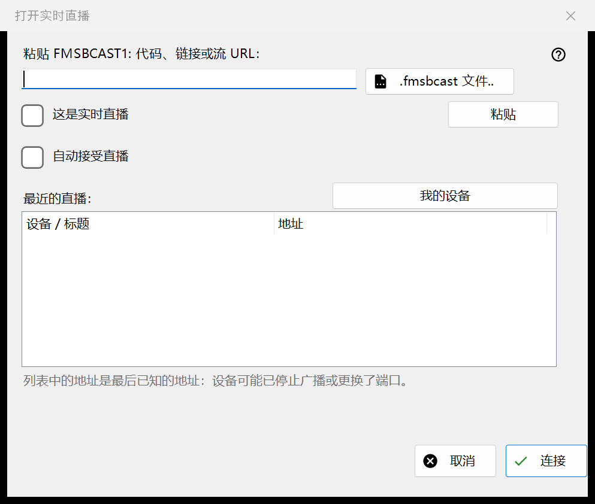
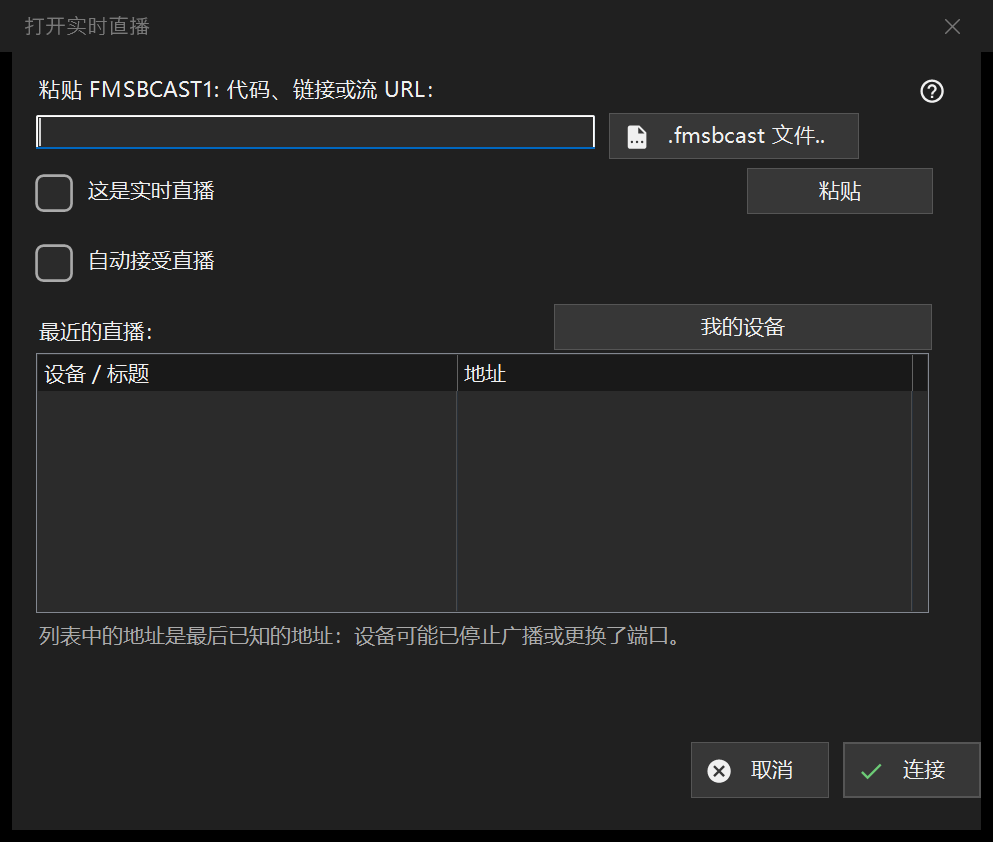

直播
用途说明
粘贴 FMSBCAST1: 代码、链接或流地址，或选择 .fmsbcast 文件。仅当普通 URL 确实来自直播源时才将其标记为直播；否则它将作为点播媒体打开。点击连接，并在提示时输入观众密码。发送端停止或更改端口后，最近地址可能失效。自动接受 Cast 是单独的明确选择。


操作顺序
粘贴 FMSBCAST1: 代码、链接或流地址，或选择 .fmsbcast 文件。仅当普通 URL 确实来自直播源时才将其标记为直播；否则它将作为点播媒体打开。点击连接，并在提示时输入观众密码。发送端停止或更改端口后，最近地址可能失效。自动接受 Cast 是单独的明确选择。
界面元素
FMSBCAST1: / .fmsbcast
粘贴 FMSBCAST1: 代码、链接或流地址，或选择 .fmsbcast 文件。仅当普通 URL 确实来自直播源时才将其标记为直播；否则它将作为点播媒体打开。点击连接，并在提示时输入观众密码。发送端停止或更改端口后，最近地址可能失效。自动接受 Cast 是单独的明确选择。